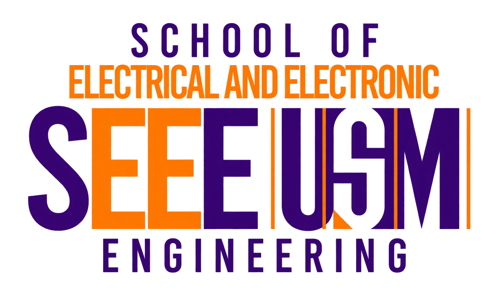

Problem
Tether handling, moving water and separate control interfaces complicate remote ROV deployment and recovery.

Research Project
Integrated surface & underwater robotics
Developing an ME120–M2 PRO MAX system for remote inspection, coordinated control and ROV deployment and recovery.
Research in progress

Tether handling, moving water and separate control interfaces complicate remote ROV deployment and recovery.
A USV gateway, shared controls and magnet-assisted mechanical capture. Simulation first; staged water trials planned.
GUI prototype · simulation first
ZED + LiDAR · integration in progress
Magnetic capture · mechanical locking concept
Simulation + planned water trials
Integrated hardware proof remains planned.
Project self-assessment · integrated system
| Measure | Evidence |
|---|---|
| Recovery success | Measurement planned |
| Control latency | Measurement planned |
| Locked hold power | Measurement planned |
| Mission completion | Measurement planned |
This provisional rating concerns the integrated research system, not the commercial vehicles. It requires review against documented experimental evidence.

Research team lead

Research team

Software integration & control systems

Mechanical design
From a shared research platform to sector-specific inspection tools.
Document quay walls, piles and submerged structures for maintenance planning.
Link surface surveys with underwater observations and repeatable inspection records.
Explore net and mooring inspections to support farm maintenance decisions.
Adapt validated methods for foundations, moorings and accessible underwater assets.
Proposed directions, subject to sector requirements and field validation. These are not demonstrated services or confirmed partnerships.
Research in motion

Surface and underwater inspection.

A closer view of submerged intakes.

Visual checks of cages and moorings.
Illustrative animations · field footage to follow.
ME120 × M2 PRO MAX · Reopening starts a new trial
UNMANNED RESEARCH LAB
Operate. Explore. Validate.
Arm with Space, then pilot with WASD.
Pilot the USV, deploy the ROV, then recover.
Inspect components and the magnetic capture concept.
| Keys | Action |
|---|---|
| Space | Arm / disarm |
| W S / A D | Forward / back · strafe left / right |
| Z X | Yaw left / right |
| Q E | Roll left / right |
| R C | Ascend / descend |
| T V | Pitch up / down |
| 0 | Level pitch and roll |
| F | Lights · 0 / 50 / 100% |
| [ ] | Drive limit · 25 / 50 / 75 / 100% |
| L · hold 1.5 s | Deploy / retrieve · Water Operation |
| K | Accessories |
| J | Capture bridge observation |
| Esc | Stop / disarm |
USV: W/S drives; A/D steers. Space controls the current pilot vehicle. Changing camera vehicle does not change control ownership.
1First personOnboard viewpoint
2Close followSpeedometer + vehicle telemetry
3Third personWide follow view
4Free viewIndependent inspection camera
HUD speed: m/s and knots. Depth, attitude and position are simulated.
In 3D Studio, select M2 PRO MAX → Accessories (K). Four separate stations animate each function. In Simulation, press K, select a tool, arm, then test underwater. Disarm stops tool actions.
Hold L for 1.5 seconds in Water Operation to deploy or retrieve; release early to cancel. Accessory fit, sonar echoes and recovery timing are illustrative.
Leaving Simulation starts a fresh trial when reopened. Download your ROV log first.
Research concepts · not fabrication approval.
Research Project